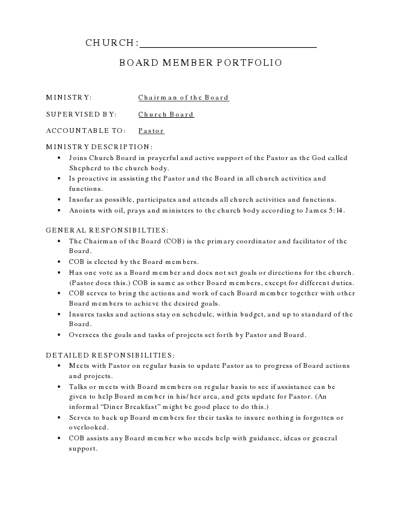

CHURCH:
BOARD MEMBER PORTFOLIO
MINISTRY: Chairman of the Board
SUPERVISED BY: Church Board
ACCOUNTABLE TO: Pastor
MINISTRY DESCRIPTION:
• Joins Church Board in prayerful and active support of the Pastor as the God called Shepherd to the church body.
• Is proactive in assisting the Pastor and the Board in all church activities and functions.
• Insofar as possible, participates and attends all church activities and functions.
• Anoints with oil, prays and ministers to the church body according to James 5:14.
GENERAL RESPONSIBILTIES:
• The Chairman of the Board (COB) is the primary coordinator and facilitator of the Board.
• COB is elected by the Board members.
• Has one vote as a Board member and does not set goals or directions for the church. (Pastor does this.) COB is same as other Board members, except for different duties.
• COB serves to bring the actions and work of each Board member together with other Board members to achieve the desired goals.
• Insures tasks and actions stay on schedule, within budget, and up to standard of the Board.
• Oversees the goals and tasks of projects set forth by Pastor and Board.
DETAILED RESPONSIBILITIES:
• Meets with Pastor on regular basis to update Pastor as to progress of Board actions and projects.
• Talks or meets with Board members on regular basis to see if assistance can be given to help Board member in his/her area, and gets update for Pastor. (An informal “Diner Breakfast” might be good place to do this.)
• Serves to back up Board members for their tasks to insure nothing is forgotten or overlooked.
• COB assists any Board member who needs help with guidance, ideas or general support.
BOARD MEMBER PORTFOLIO
• Insures that Board members work together and coordinate actions to they go in same direction. (They may not know they are going in different directions.)
• Insures tasks and actions stay on schedule, in budget, and up to standard as Board wishes.
• Resolves conflicts as to time, money, progress, etc., as possible without Board action.
NOTES:
• COB can also have a regular Portfolio of duties that does not require as much time and effort as other Portfolios may require, but this must be kept small so as not to over burden the COB.
• Pastor and COB should implement bi-weekly informal “Coffee with the Pastor” to talk over light issues, concerns, updates, status reports, prayer needs, etc.